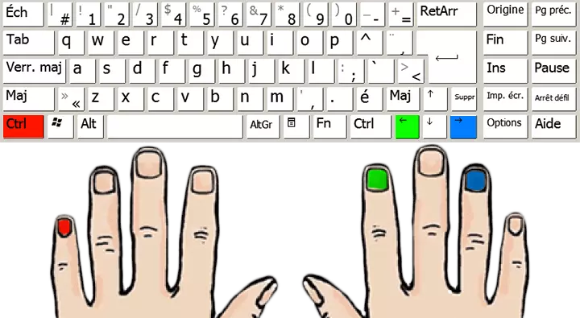
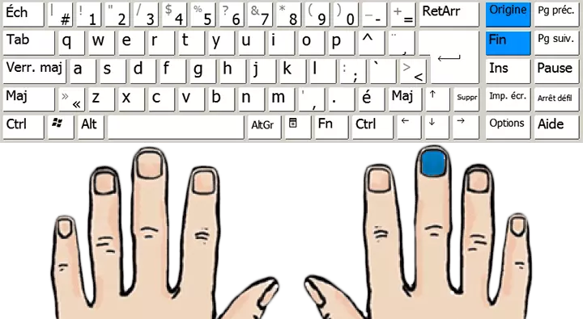
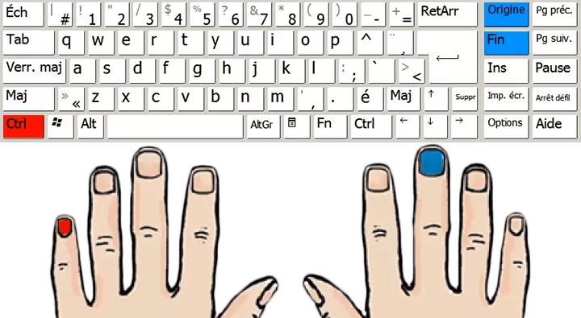
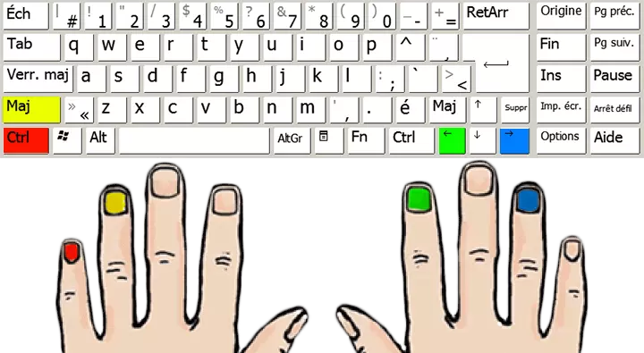
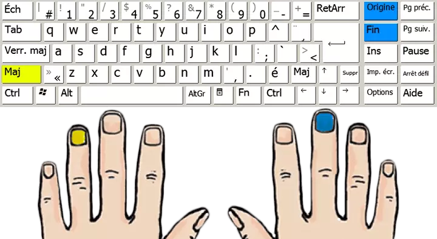
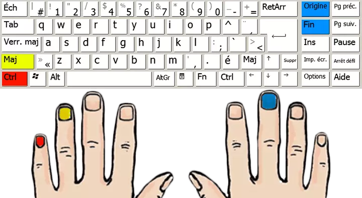
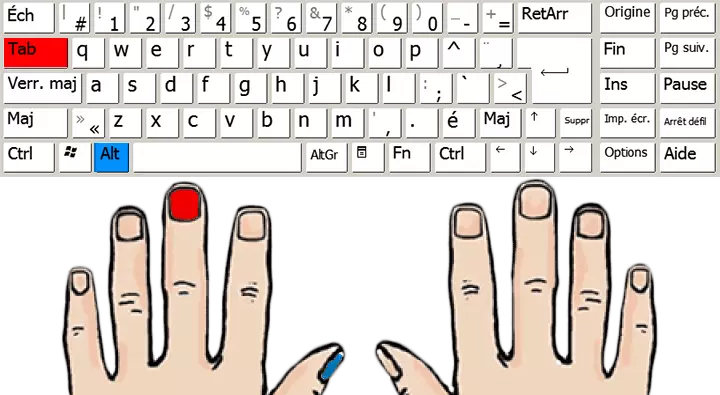
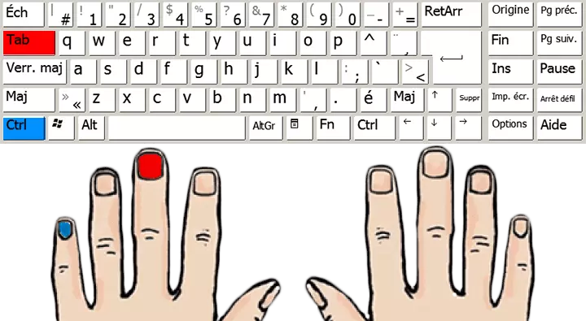

Navigation
Par mot
- Mot suivant: CTRL + Flèche droite
- Mot précédent: CTRL + Flèche gauche

Début et fin de ligne
- Début de ligne: Home (Origine)
- Fin de ligne: End (Fin)

Début et fin de fichier
- Début de fichier: CTRL + Home (Origine)
- Fin de fichier: CTRL + End (Fin)

Selection
Par mot
- Mot suivant: CTRL + SHIFT (Maj.) + Flèche droite
- Mot précédent: CTRL + SHIFT (Maj.) + Flèche gauche

Début et fin de ligne
- Début de ligne: SHIFT (Maj.) + Home (Origine)
- Fin de ligne: SHIFT (Maj.) + End (Fin)

Début et fin de fichier
- Début de fichier: SHIFT (Maj.) + CTRL + Home (Origine)
- Fin de fichier: SHIFT (Maj.) + CTRL + End (Fin)

Fenêtres
Changer de fenêtre
- Fenêtre précédente: ALT + TAB

Changer d'onglet
- Onglet précédent: CTRL + TAB
